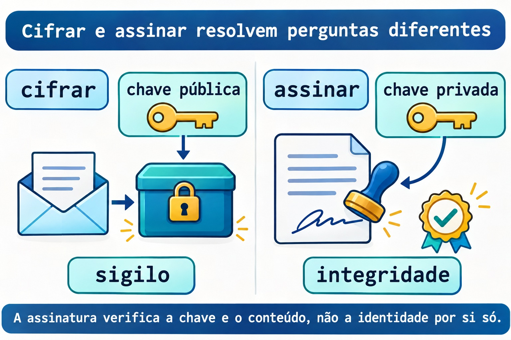
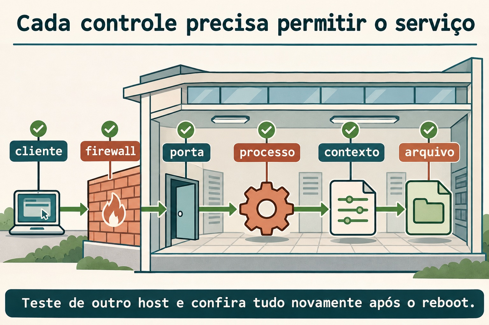

Aula 12.5 · Auditoria e criptografia
No Windows Server, você já relaciona contas, permissões, sessões e serviços. No Linux, vai montar esse inventário sem remover privilégios por impulso. Depois, vai cifrar e assinar um arquivo com uma chave exclusiva do lab. O desafio final reúne firewall, SELinux e serviço persistente.
Núcleo desta aula: privilégio exige finalidade; histórico depende de coleta; cifrar protege o conteúdo e assinar permite verificar conteúdo e chave. O resto é aprofundamento.
| Ficha | |
|---|---|
| Módulo | M12 · Segurança do host, aula 5 de 5 |
| Quando | Semana 18 |
| Ao final | Você investiga privilégios, distingue sessão atual de histórico e verifica cifragem e assinatura |
| Pré-requisitos | Aulas 12.1 a 12.4, GnuPG e ferramentas de auditoria; nginx e ferramentas SELinux já usados no módulo |
| Tempo | Cerca de 90 minutos, mais uma sessão para o desafio |
| Snapshots | m12a5-inicio e m12a5-fim nas VMs 201 e 202 |
1 · Aquecimento
- Uma porta liberada no firewall cria um serviço em escuta?
- Qual é a diferença entre registrar um contexto com
semanage fcontexte aplicá-lo comrestorecon? - Por que a correção de um AVC começa pela operação negada, e não por liberar tudo?
2 · Por que importa
Uma revisão encontra um arquivo com SUID, uma porta sem finalidade documentada e uma assinatura válida. São três perguntas diferentes. O SUID pode ser legítimo; a porta precisa de dono; a assinatura corresponde a uma chave, cuja identidade precisa ser conferida por outro meio.
Auditar é transformar essas observações em decisões justificadas. Você registra o que existe, compara com a intenção e altera apenas o que compreendeu.
3 · Modelo mental
O inventário é a lista de chaves e salas do prédio. A cifragem é uma caixa que só a chave do destinatário consegue abrir. A assinatura é um selo verificável sobre o documento; o nome escrito no selo não comprova sozinho a identidade de quem o criou.
inventário -> finalidade -> decisão registrada
cifrar: conteúdo legível -> conteúdo protegido
assinar: conteúdo + chave privada -> assinatura verificável
Ponte Windows
| Windows Server | Linux | Pergunta |
|---|---|---|
| Token e permissões de execução | Dono, modos, SUID e política MAC | Quem ganha qual acesso? |
| Sessões e registros de logon | who, histórico e journal | O que está acontecendo e o que foi registrado? |
| Assinatura e cifragem | Operações OpenPGP do GnuPG | Quero sigilo, integridade ou ambos? |
4 · O essencial
Privilégio não é diagnóstico
O bit SUID merece investigação, não remoção automática. Confira tipo de arquivo, dono, pacote e finalidade. O inventário desta aula procura em /usr sem atravessar outros sistemas de arquivos; não remove bits de programas da distribuição.
Sessão atual e histórico
who lê o registro de sessões atuais. O histórico exige que o mecanismo de coleta já estivesse funcionando. Uma lista vazia não demonstra que ninguém entrou na máquina.
Na Debian 13, o substituto previsto para o last tradicional é wtmpdb last, com coleta por libpam-wtmpdb. Instalar o coletor hoje não reconstrói registros antigos. Na Rocky 9, você usa last.
Limite tem escopo
ulimit mostra ou altera limites do shell e dos processos que ele iniciar. Isso não muda todos os serviços do host. O exercício modifica apenas um limite soft dentro de um subshell, que termina junto com o teste.
Duas operações criptográficas
Você cifra para a chave pública do destinatário; a chave privada correspondente decifra. Você assina com sua chave privada; a chave pública permite verificar a assinatura. Uma assinatura válida ainda exige conferir a impressão digital da chave por um canal confiável.


Rocky × Debian
| Item | Rocky 9 | Debian 13 |
|---|---|---|
| Histórico tradicional do lab | last | wtmpdb last com coleta configurada |
| Pacote de GnuPG | gnupg2 | gnupg, com pinentry disponível |
| Conferir pacote de um arquivo | rpm -qf | dpkg-query -S |
| Proteção no desafio | SELinux enforcing e firewalld | nftables e inspeção de AppArmor |
5 · Lab guiado
Repita o lab nas duas VMs. As chaves ficam em um diretório novo e privado; não use sua chave pessoal nem envie chave privada para outra máquina.
Passo 1 · Proteger e preparar
Palpite: criar outro diretório de GnuPG deveria alterar as identidades do seu chaveiro pessoal?
No host Proxmox:
qm snapshot 201 m12a5-inicio
qm snapshot 202 m12a5-inicioNas VMs, confira a ausência da pasta antes de criá-la. Se existir, revise os registros anteriores em vez de sobrescrevê-los.
test ! -e "$HOME/m12a5"
command -v gpg who ss python3 curl
mkdir -m 700 "$HOME/m12a5"
mkdir -m 700 "$HOME/m12a5/gnupg"
printf 'M12 audit record\n' > "$HOME/m12a5/registro.txt"Saída esperada: diretório privado novo e ferramentas disponíveis. Obtenha pacotes faltantes pelo procedimento do M6 antes de seguir. Na Debian 13 mínima, gpg e gpgconf vêm do pacote gnupg; não configure um coletor de histórico fingindo que ele já estava ativo.
Verifique: confira stat -c '%a %U %n' "$HOME/m12a5/gnupg". O modo deve ser 700 e o dono, student.
Passo 2 · Inventariar sem corrigir por impulso
Palpite: encontrar SUID identifica, sozinho, um arquivo malicioso?
sudo find /usr -xdev -type f -perm -4000 -printf '%m %u %p\n' > "$HOME/m12a5/suid.txt"
sudo ss -lntup > "$HOME/m12a5/sockets.txt"
who > "$HOME/m12a5/who.txt"
ulimit -Sn
ulimit -HnEscolha um caminho real encontrado e consulte seu pacote: na Rocky, rpm -qf CAMINHO; na Debian, dpkg-query -S CAMINHO. Troque o argumento pelo caminho observado, sem remover o bit.
Saída esperada: inventário real, sem quantidade predeterminada de arquivos ou sessões.
Verifique: para uma porta em escuta, associe processo e finalidade. Para um arquivo SUID, registre dono, pacote e motivo antes de propor uma alteração.
Decida 1
Você encontrou SUID em um programa instalado pela distribuição. O que faz primeiro?
| Opção | Ação |
|---|---|
| A | Remover SUID de tudo |
| B | Conferir pacote, dono e finalidade |
| C | Executar como root para ver o que acontece |
Escolha B. Inventário vira decisão quando você entende o uso do privilégio.
Passo 3 · Ler o histórico que existe
Palpite: instalar uma ferramenta de histórico pode recuperar sessões que nunca foram registradas?
Na Rocky, use o primeiro bloco. Na Debian 13 com a coleta de wtmpdb configurada, use o segundo. Se a coleta não existe, registre essa ausência como resultado do inventário.
last -n 5wtmpdb last -n 5Saída esperada: sessões realmente registradas, ou a indicação de que a base não está disponível. Não invente nomes, horários ou logins.
Verifique: compare uma sessão atual com who. Escreva qual fonte foi consultada e quais limites de cobertura ela possui.
Passo 4 · Criar uma identidade só do lab
Palpite: o nome escrito na identidade da chave comprova quem é seu dono fora do lab?
export GPG_TTY=$(tty)
gpg --homedir "$HOME/m12a5/gnupg" --full-generate-key
gpg --homedir "$HOME/m12a5/gnupg" --list-keys --fingerprintNa geração interativa, escolha RSA com subchave de cifragem, 3072 bits, validade de um dia, nome fictício Lab M12 e endereço lab-m12@example.invalid. Digite uma passphrase apenas no diálogo interativo. Não a escreva em argumentos, arquivos do curso ou diário.
Saída esperada: uma chave nova nesse diretório, com impressão digital própria. A chave de cada VM será diferente, mesmo com o mesmo nome fictício.
Verifique: registre apenas a impressão digital pública. Uma identidade autocriada do lab não deve ser apresentada como identidade verificada de uma pessoa real.
Passo 5 · Cifrar e recuperar
Palpite: qual parte da chave permite decifrar o arquivo cifrado para esse destinatário?
gpg --homedir "$HOME/m12a5/gnupg" --recipient lab-m12@example.invalid --output "$HOME/m12a5/registro.gpg" --encrypt "$HOME/m12a5/registro.txt"
gpg --homedir "$HOME/m12a5/gnupg" --output "$HOME/m12a5/recuperado.txt" --decrypt "$HOME/m12a5/registro.gpg"
cmp "$HOME/m12a5/registro.txt" "$HOME/m12a5/recuperado.txt"Saída esperada: arquivo cifrado, recuperação pelo chaveiro do lab e comparação sem diferenças. A passphrase pode estar em cache no agente e não ser solicitada a cada operação.
Verifique: confirme o código 0 de cmp imediatamente com echo $?. O texto original continua existindo; cifrar não o apaga.
Passo 6 · Assinar e verificar
Palpite: uma assinatura destacada cifra o arquivo original?
gpg --homedir "$HOME/m12a5/gnupg" --armor --output "$HOME/m12a5/registro.txt.asc" --detach-sign "$HOME/m12a5/registro.txt"
gpg --homedir "$HOME/m12a5/gnupg" --verify "$HOME/m12a5/registro.txt.asc" "$HOME/m12a5/registro.txt"Saída esperada: verificação criptográfica válida para a chave e os bytes originais. O documento continua legível sem decifrar.
Verifique: compare a impressão digital usada na assinatura com a registrada no passo 4. Isso identifica a chave do exercício, não comprova uma identidade externa.
Decida 2
Você quer impedir leitura do conteúdo e detectar adulteração. Qual decisão atende às duas necessidades?
| Opção | Ação |
|---|---|
| A | Só renomear o arquivo |
| B | Só assinar e deixar o conteúdo público |
| C | Cifrar para o destinatário e verificar uma assinatura com chave conferida |
Escolha C. Sigilo e verificação de autoria são objetivos diferentes.
6 · Quebre e conserte
Quebra 1 · SUID sem finalidade
Crie só um arquivo de dados inerte, sem permissão de execução. Confirme que o diretório abaixo não existia antes; se existir, não o reutilize.
sudo test ! -e /srv/m12a5-audit
sudo install -d -m 0755 /srv/m12a5-audit
sudo install -m 4644 "$HOME/m12a5/registro.txt" /srv/m12a5-audit/inert.txtSintoma: o inventário encontra SUID em um arquivo que não precisa executar nada.
Investigação: leia modo, dono e tipo, sem executar o arquivo.
stat -c '%A %a %U %n' /srv/m12a5-audit/inert.txt
file /srv/m12a5-audit/inert.txtCausa: o bit foi acrescentado sem finalidade. Neste arquivo de dados sem execução ele não cria um programa privilegiado.
Conserto: retire somente o bit desnecessário do arquivo do lab.
sudo chmod u-s /srv/m12a5-audit/inert.txtVerifique: o modo volta a 644; nenhum binário da distribuição foi alterado.
Prevenção: registre a finalidade dos privilégios e compare o inventário com a base conhecida.
Quebra 2 · Documento adulterado
Altere apenas uma cópia, preservando original e assinatura.
cp "$HOME/m12a5/registro.txt" "$HOME/m12a5/adulterado.txt"
printf 'changed\n' >> "$HOME/m12a5/adulterado.txt"
gpg --homedir "$HOME/m12a5/gnupg" --verify "$HOME/m12a5/registro.txt.asc" "$HOME/m12a5/adulterado.txt"Sintoma: a verificação falha para a cópia.
Investigação: compare os bytes e verifique o original com a mesma assinatura.
Causa: a assinatura foi criada para outro conteúdo. Copiar o nome ou o arquivo de assinatura não autoriza novos bytes.
Conserto: use o original preservado; não assine novamente para esconder a adulteração.
Verifique: o comando do passo 6 continua válido sobre o original.
Prevenção: distribua conteúdo e assinatura identificados e confira a impressão digital do emissor por outro canal.
Quebra 3 · Limite do processo
Confira que o limite hard de arquivos abertos é pelo menos 32. O teste abaixo abre no máximo 64 descritores em um processo filho e os fecha ao terminar.
(
ulimit -Sn 32
python3 - <<'PY'
import os
from contextlib import ExitStack
with ExitStack() as stack:
try:
for _ in range(64):
stack.enter_context(open(os.devnull))
except OSError as exc:
print("errno=", exc.errno)
PY
)Sintoma: o processo filho encontra o limite de descritores e relata o erro 24.
Investigação: compare ulimit -Sn fora do subshell com o valor imposto dentro dele.
Causa: o limite pertence ao processo e à herança dele, não a todos os serviços da VM.
Conserto: termine o teste; o subshell já encerrou e não alterou o shell principal.
Verifique: o limite do terminal principal permanece igual ao anotado no passo 2.
Prevenção: investigue o limite do processo afetado antes de mudar configuração global.
Limpeza
Remova só o arquivo inerte e seu diretório agora vazio. Guarde os registros privados e os arquivos criptográficos para a conferência após reboot. Não exporte a chave privada.
sudo rm -- /srv/m12a5-audit/inert.txt
sudo rmdir /srv/m12a5-audit
gpgconf --homedir "$HOME/m12a5/gnupg" --kill gpg-agent7 · Armadilhas
| Erro comum | O que fazer | Por quê |
|---|---|---|
| Remover SUID em massa | Relacionar pacote e finalidade | Pode quebrar acesso legítimo |
| Histórico vazio significa nenhum login | Conferir a coleta e a cobertura | Dados ausentes não comprovam ausência de uso |
| Assinatura válida comprova um nome real | Conferir a impressão digital por outro canal | A identidade escrita pode ser autocriada |
| Cifrar apaga o original | Conferir os arquivos existentes | O texto legível continua no disco |
8 · Quiz
- Por que um arquivo SUID precisa de investigação antes de alteração?
- Qual é a diferença entre
whoe o histórico de sessões? - Qual substituto de
lasté previsto na Debian 13 e o que ele não recupera? - Qual chave cifra para o destinatário e qual decifra?
- Por que uma assinatura destacada deixa o conteúdo legível?
- Mudar
ulimitno seu terminal muda o limite de um serviço já iniciado?
9 · Cola
| Tarefa | Comando |
|---|---|
| Sessões atuais | who |
| Histórico Rocky | last -n 5 |
| Histórico Debian | wtmpdb last -n 5 |
| Limite soft do shell | ulimit -Sn |
| Impressão digital do lab | gpg --homedir "$HOME/m12a5/gnupg" --list-keys --fingerprint |
Flashcards: crie cinco cartões sobre privilégio, histórico, limite, cifragem e assinatura. Revise em D+1, D+3, D+7 e D+21.
10 · Checklist e fechamento
- [ ] Fiz inventário nas duas VMs sem remover privilégios da distribuição.
- [ ] Cifrei, recuperei, assinei e detectei adulteração de uma cópia.
- [ ] Expliquei o alcance do histórico e do limite de processo.
- [ ] Completei o desafio abaixo e a limpeza direcionada.
Último exercício: escreva um relatório com três achados, fonte da evidência, finalidade e decisão. Separe observação de hipótese.
Reboot de conferência: primeiro valide a persistência exigida no desafio. Após a limpeza dele, reinicie as duas VMs e confirme acesso, política original e assinatura do arquivo original. A passphrase do lab deve ser solicitada quando necessária.
No host Proxmox, os snapshots finais só entram depois do desafio e da limpeza.
qm snapshot 201 m12a5-fim
qm snapshot 202 m12a5-fim11 · Na vida real
Em um host que você administre ou tenha autorização para inspecionar, faça somente leitura: portas, sessões atuais e limites do processo de um serviço. Não execute um arquivo suspeito, não remova bits e não configure um coletor novo nesta missão.
Qual privilégio tem justificativa documentada? Qual histórico realmente existe? Que impressão digital você precisaria confirmar antes de confiar em um documento assinado?
12 · Aprofundar quando quiser
- Debian 13: registros de login e wtmpdb.
- GnuPG: gestão de chaves e operações.
- nginx: parâmetros, systemd.service e nftables.
- SELinux no RHEL 9 e firewalld.
DeepTutor (http://10.1.0.149:3782, KB "Curso Linux Sysadmin"):
!explica Compare inventário de privilégios, sigilo e assinatura sem misturar suas finalidades.!feynman Vou explicar por que uma assinatura válida não comprova sozinha uma identidade real. Critique.!quiz Crie seis situações de auditoria, histórico e criptografia com os limites de cada evidência.
Desafio do M12 · Serviço protegido do cliente ao arquivo
Entregue nginx persistente em TCP 18095, com conteúdo exclusivo em /srv/m12a5-web. Na Rocky, SELinux deve continuar Enforcing e firewalld ativo. Na Debian, use uma tabela nftables própria. Teste a partir da outra VM e após reboot.


Preparação do desafio
Use noVNC e uma sessão SSH aberta. As aulas anteriores devem ter sido limpas; os pacotes nginx e SELinux permanecem instalados. Não reutilize suas unidades antigas. Verifique que nginx.service original está inativo e desabilitado e não o altere.
Antes de criar, confira a ausência de /srv/m12a5-web, /etc/nginx/m12a5.conf, /etc/systemd/system/m12a5-nginx.service, /etc/nftables.d/m12a5.nft, /etc/systemd/system/m12a5-firewall.service, /run/nginx-m12a5 e dos logs m12a5-access.log e m12a5-error.log em /var/log/nginx. Confira que a porta 18095 está sem escuta e sem associação local prévia no SELinux, inclusive em intervalos de portas.
Na Rocky, leia sudo semanage fcontext -l -C antes de registrar os dois padrões abaixo. Se já existirem, pare e revise a origem. Na Debian, confira sudo nft list ruleset: a tabela inet m12a5 não deve existir e outras políticas não podem bloquear a porta sem que você entenda sua origem.
Instância nginx própria
Na Rocky, defina WEB_USER=nginx; na Debian, WEB_USER=www-data. Depois, nas duas VMs, crie conteúdo e configuração exclusivos.
sudo install -d -m 0755 /srv/m12a5-web
printf 'M12 PROTECTED ok\n' | sudo tee /srv/m12a5-web/index.html > /dev/null
sudo chmod 0644 /srv/m12a5-web/index.html
cat > "$HOME/m12a5/m12a5.conf" <<EOF
user $WEB_USER;
worker_processes 1;
pid /run/nginx-m12a5/nginx.pid;
error_log /var/log/nginx/m12a5-error.log;
events { worker_connections 32; }
http {
access_log /var/log/nginx/m12a5-access.log;
server {
listen 18095;
root /srv/m12a5-web; index index.html;
location / { try_files \$uri \$uri/ =404; }
}
}
EOF
sudo install -m 0644 "$HOME/m12a5/m12a5.conf" /etc/nginx/m12a5.confCrie a unidade abaixo na pasta privada e instale-a no caminho já conferido. Ela não carrega a configuração nginx original.
cat > "$HOME/m12a5/m12a5-nginx.service" <<'EOF'
[Unit]
Description=Course M12A5 nginx
After=network.target firewalld.service m12a5-firewall.service
[Service]
Type=simple
RuntimeDirectory=nginx-m12a5
ExecStartPre=/usr/sbin/nginx -t -c /etc/nginx/m12a5.conf
ExecStart=/usr/sbin/nginx -c /etc/nginx/m12a5.conf -g "daemon off;"
[Install]
WantedBy=multi-user.target
EOF
sudo install -m 0644 "$HOME/m12a5/m12a5-nginx.service" /etc/systemd/system/m12a5-nginx.serviceAutorizações SELinux na Rocky
Registre os tipos apenas na Rocky. O padrão de runtime precisa ser aplicado a cada criação do diretório no boot. Acrescente a preparação de contexto na unidade própria, sem modificar a unidade original.
getenforce
sudo semanage fcontext -a -t httpd_sys_content_t '/srv/m12a5-web(/.*)?'
sudo semanage fcontext -a -t httpd_var_run_t '/var/run/nginx-m12a5(/.*)?'
sudo restorecon -RFv /srv/m12a5-web /etc/nginx/m12a5.conf
sudo semanage port -a -t http_port_t -p tcp 18095
sudo sed -i '/^ExecStartPre=/i ExecStartPre=/usr/sbin/restorecon -RF /run/nginx-m12a5' /etc/systemd/system/m12a5-nginx.serviceNa Debian, observe aa-status e o confinamento efetivo do nginx; não invente SELinux enforcing nem desative AppArmor. Se um perfil existente impedir os caminhos exclusivos, adapte o lab com a política responsável antes de prosseguir.
Firewall de escopo limitado
Na Rocky, identifique a zona efetiva como na 12.2. Guarde zona e regras em arquivos privados para removê-las exatamente depois. As duas regras abaixo são novas e não devem existir antes do desafio.
read -r -p 'ZONE: ' ZONE
ALLOW='rule priority="-20" family="ipv4" source address="10.1.0.52/32" port port="18095" protocol="tcp" accept'
DROP='rule priority="-10" family="ipv4" port port="18095" protocol="tcp" drop'
printf '%s\n' "$ZONE" > "$HOME/m12a5/zone"
printf '%s\n' "$ALLOW" > "$HOME/m12a5/allow"
printf '%s\n' "$DROP" > "$HOME/m12a5/drop"
sudo firewall-cmd --zone="$ZONE" --add-rich-rule="$DROP"
sudo firewall-cmd --zone="$ZONE" --add-rich-rule="$ALLOW"
sudo firewall-cmd --permanent --zone="$ZONE" --add-rich-rule="$DROP"
sudo firewall-cmd --permanent --zone="$ZONE" --add-rich-rule="$ALLOW"Na Debian, crie o arquivo abaixo e instale-o no caminho exclusivo. A tabela libera a origem Rocky e descarta outras origens só para IPv4 10.1.0.52, TCP 18095. Não altera outras tabelas.
cat > "$HOME/m12a5/m12a5.nft" <<'EOF'
table inet m12a5 {}
flush table inet m12a5
table inet m12a5 {
chain input {
type filter hook input priority -10; policy accept;
ip saddr 10.1.0.51 ip daddr 10.1.0.52 tcp dport 18095 counter accept
ip daddr 10.1.0.52 tcp dport 18095 counter drop
}
}
EOF
sudo install -d -m 0755 /etc/nftables.d
sudo install -m 0644 "$HOME/m12a5/m12a5.nft" /etc/nftables.d/m12a5.nft
sudo nft -c -f /etc/nftables.d/m12a5.nftNa Debian, crie a unidade própria e habilite somente ela. A ordem de boot preserva a carga de outras políticas antes da tabela do desafio.
cat > "$HOME/m12a5/m12a5-firewall.service" <<'EOF'
[Unit]
Description=Course M12A5 firewall table
DefaultDependencies=no
Wants=network-pre.target
Before=network-pre.target shutdown.target
After=local-fs.target nftables.service
Conflicts=shutdown.target
[Service]
Type=oneshot
RemainAfterExit=yes
ExecStart=/usr/sbin/nft -f /etc/nftables.d/m12a5.nft
ExecStop=/usr/sbin/nft delete table inet m12a5
[Install]
WantedBy=multi-user.target
EOF
sudo install -m 0644 "$HOME/m12a5/m12a5-firewall.service" /etc/systemd/system/m12a5-firewall.service
sudo systemd-analyze verify /etc/systemd/system/m12a5-firewall.service
sudo systemctl daemon-reload
sudo systemctl enable --now m12a5-firewall.serviceEvidências para concluir
Nas duas VMs, valide a unidade nginx, recarregue o catálogo de unidades e habilite a instância própria. Na Debian, a unidade do firewall deve ter sido habilitada antes.
sudo systemd-analyze verify /etc/systemd/system/m12a5-nginx.service
sudo systemctl daemon-reload
sudo systemctl enable --now m12a5-nginx.service
sudo ss -lntp 'sport = :18095'Teste http://10.1.0.51:18095/ a partir da Debian e http://10.1.0.52:18095/ a partir da Rocky, com curl --noproxy '*' --connect-timeout 2 --max-time 4. O conteúdo esperado é M12 PROTECTED ok. Na Rocky, registre ainda getenforce, ps -eZ, ls -Zd /srv/m12a5-web e o mapeamento da porta.
Reinicie uma VM por vez e repita tudo. O nginx da Rocky precisa estar no domínio httpd_t, SELinux em Enforcing e firewalld ativo. Se a unidade inicia sem o domínio esperado, o desafio ainda não demonstrou a proteção exigida.
Limpeza do desafio
Pare e desabilite a instância própria nas duas VMs. Na Debian, pare e desabilite também m12a5-firewall.service; sua parada remove só a tabela do desafio.
sudo systemctl disable --now m12a5-nginx.serviceNa Rocky, retire apenas as duas regras registradas, nos dois estados.
ZONE=$(cat "$HOME/m12a5/zone")
ALLOW=$(cat "$HOME/m12a5/allow")
DROP=$(cat "$HOME/m12a5/drop")
sudo firewall-cmd --zone="$ZONE" --remove-rich-rule="$ALLOW"
sudo firewall-cmd --zone="$ZONE" --remove-rich-rule="$DROP"
sudo firewall-cmd --permanent --zone="$ZONE" --remove-rich-rule="$ALLOW"
sudo firewall-cmd --permanent --zone="$ZONE" --remove-rich-rule="$DROP"Na Rocky, remova somente as três autorizações locais que o desafio criou.
sudo semanage port -d -p tcp 18095
sudo semanage fcontext -d '/srv/m12a5-web(/.*)?'
sudo semanage fcontext -d '/var/run/nginx-m12a5(/.*)?'
sudo restorecon -RFv /srv/m12a5-webNa Debian, remova a unidade do firewall e o arquivo próprio após parar a unidade.
sudo systemctl disable --now m12a5-firewall.service
sudo rm -- /etc/systemd/system/m12a5-firewall.service /etc/nftables.d/m12a5.nftNas duas VMs, remova os arquivos exclusivos abaixo e o diretório agora vazio. Não remova arquivos originais do nginx.
sudo rm -- /etc/systemd/system/m12a5-nginx.service /etc/nginx/m12a5.conf /srv/m12a5-web/index.html
sudo rmdir /srv/m12a5-web
sudo systemctl daemon-reloadGuarde os logs exclusivos como evidência e confirme que nenhuma unidade do desafio volta após reboot. Confirme SSH, nginx original no estado inicial e política original preservada antes do snapshot final.
Gabarito comentado
Aquecimento
- Não. O processo precisa existir e escutar no endereço usado pelo cliente.
- O primeiro registra o mapeamento persistente; o segundo aplica o contexto aos arquivos existentes.
- A negativa identifica a operação e o alvo; liberar tudo esconderia uma configuração incorreta.
Quiz
- O privilégio pode ser necessário ao programa; compare com pacote e finalidade.
whodescreve sessões atuais registradas; o histórico depende da coleta anterior.wtmpdb last, com coleta apropriada; não recupera registros que nunca existiram.- Cifra com a pública do destinatário; decifra com a privada correspondente.
- Ela acrescenta uma assinatura separada; não transforma o documento em conteúdo cifrado.
- Não. O limite do shell afeta ele e seus novos descendentes, não um serviço independente já iniciado.
Dicas do Desafio
Faça uma conferência por camada: processo ativo, socket, tipo do arquivo, tipo da porta e origem autorizada. Use os logs da instância própria e o AVC antes de mudar uma autorização. O reboot precisa reconstruir serviço e política sem sua intervenção.
← Aula 12.4 · SELinux: portas e booleanos · Índice de aulas · Plano do curso: M13 em diante →